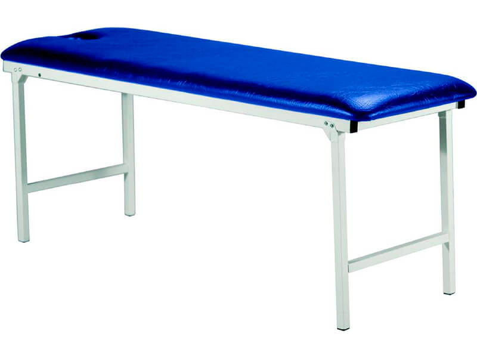
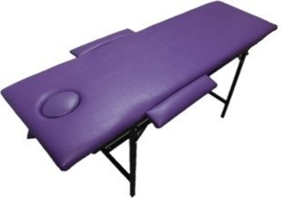
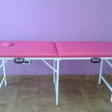
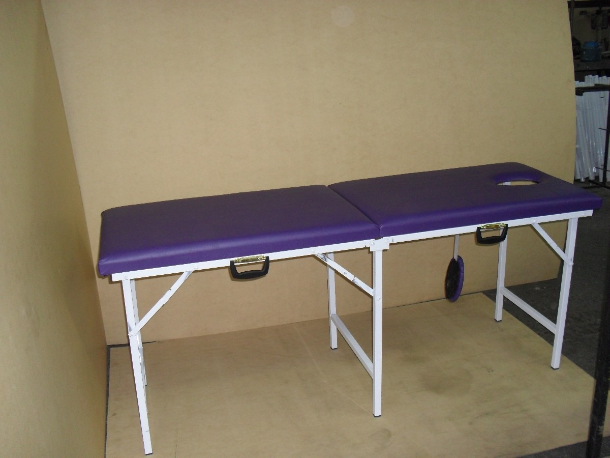
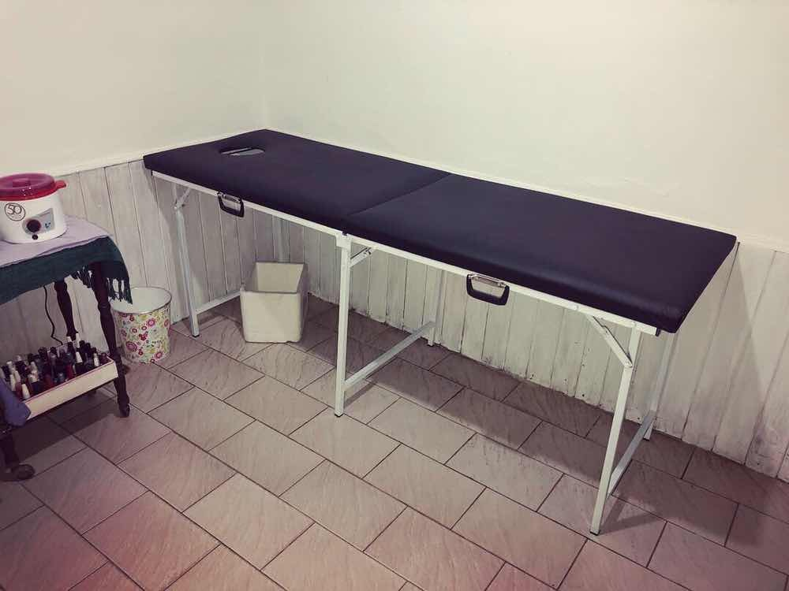
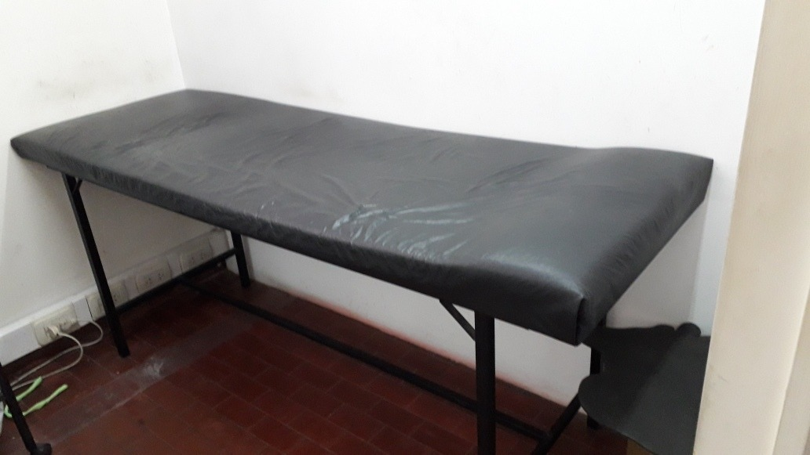
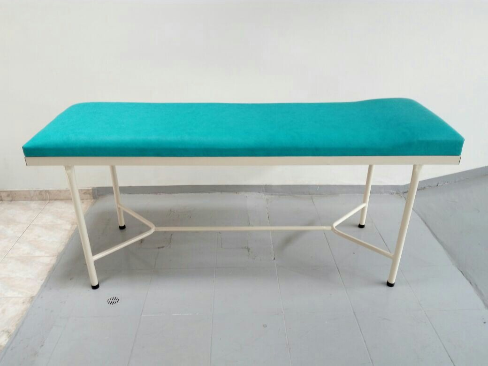
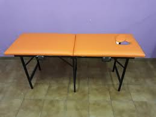

Somos expertos en camillas, en la web nos limitamos a analizar, comparar distintos modelos de camillas de masajes. En nuestra página web encontrarás las mejores camillas portátiles, articuladas

Camillas para Reiky
Fijas o plegables para sesiones de Reiki. Las mejores camillas para Reiki a domicilio por precio, calidad y peso. Camillas de madera estables.
Ver mas.jpg)
Camillas portatiles
Camillas portátiles para realizar masajes a domicilio y puedas desplazarte con poco peso. Ver todas las camillas portátiles de nuestra tienda online.
Ver mas

Camillas para masajes
Camillas de masajes profesionales a buen precio. Camillas para masajes de calidad fijas o plegables, de madera o aluminio. Las mejores para hacer masajes.
Ver mas

Foto 1

Foto 2

Foto 3

Foto 4

Foto 5
